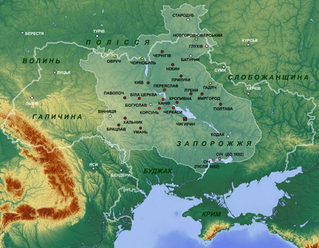

Certains hommes aiment à regarder le football. Certains n'aiment pas. Mais la majorité, je pense, aime les concours de beauté. Je suis de cette majorité. Je m’intéresse non seulement aux concours de beauté nationaux ou mondiaux, mais aussi aux concours régionaux. Il n'y a pas si longtemps, en décembre 2015, s’est déroulé un concours « Miss République de Sakha (Yakoutie) ». Alexandra Pavlova, une beauté de 18 ans, a gagné le concours.
Quand les journalistes, après l'annonce des gagnants et attribution des prix, se sont adressés à elle avec des questions, elle a répondu : « Je suis désolée, je ne parle pas russe »1. Il y a des choses à réfléchir, n’est-ce pas ?
Dans cet article, je voudrais comparer dans la forme la plus générale les différentes politiques nationales et linguistiques appliquées en Russie au cours des cent dernières années. Je vais dire très peu de choses sur l'Empire russe, beaucoup plus de choses sur l'Union soviétique, et quelques propos sur la Russie contemporaine. Il est impossible de parler de la stabilité politique de la Fédération de Russie en dehors des politiques nationales harmonieuses, qui évitent des erreurs du passé. Dans son article sur la politique nationale, Vladimir Poutine, à l'époque premier ministre, a écrit : « Pour la Russie, avec sa variété de langues, de traditions, d'ethnies et de cultures, la question nationale, sans aucune exagération, est fondamentale... L'une des principales conditions d'existence de notre pays est un accord civil et interethnique »2.
Drapeau de l’Hetmanat cosaqueL'ère de l'Empire russe, en particulier dans les étapes ultérieures, est appelée la période de russification forcée. À l'heure actuelle, cette idée est dominante dans l'historiographie de la Pologne, la Finlande et les pays de l'ex-Union soviétique. La russification sous la forme de la politique de l'État, et ainsi que sous la forme d’autorussification, se réalisa dans des moments différents aux différentes frontières de l'Empire, avec une intensité différente et avec des résultats différents3. Il suffit de dire qu’aucun des peuples constitutifs n'a disparu dans l'Empire russe, y compris le peuple ukrainien qui attire, pour des raisons évidentes, l’attention particulière du monde ces dernières deux années et demie.
A l’époque de l'Empire russe il n’avait pas de « question ukrainienne » à cause de l'absence d’aspiration de détachement ethnique ou public de la population de la Petite-Russie par rapport à la Grande-Russie. Lorsque, dans la seconde moitié du XIXe siècle, il y eut des petits cercles d’ukrainophiles (comme en Petite-Russie, ou même dans la capitale Saint-Pétersbourg), qui voulurent publier des livres sur le dialecte de la Petite-Russie, l’État les limita. Les autorités constatèrent alors influence polonaise sur la population de Petite-Russie4.
A cette époque, au début de la Première Guerre mondiale, le commandement austro-hongrois et allemand considèrent le « projet Ukraine » (à cette époque l'Ukraine était le nom d’un projet) comme un facteur éventuel de l'affaiblissement de l'Empire russe. Une légion de volontaires ukrainiens occidentaux, qui combattait sur le front de l'Est, fut même présentée au sein de l'armée austro-hongroise.

Hetmanat cosaque en 1654
La victoire des bolcheviques dans la Guerre civile aboutit au sein de l'Union soviétique à l'épanouissement du quasi-État-nation ukrainien et d'autres dont la plupart existent encore aujourd'hui. Au début des années 1920, dans les républiques « nationales » nouvellement formées, fut commencé le processus d’« indigénisation » (ou, dans le cas de l'Ukraine, « Ukrainisation »6), sanctionné par Moscou. On propagea obligatoirement la langue « nationale », même si la majorité, en particulier parmi l'intelligentsia urbaine et la classe ouvrière, ne la parlèrent pas. Ce sont des cadres « nationaux » qui furent nommés à la fonction publique. Il fut alors mis en place un processus de territorialisation ethnique : des provinces, à l'époque impériale, jusqu’alors nommées selon les noms des villes centrales, reçurent le nom de groupes ethniques y vivant7.
Cette politique a été justifiée par l'idéologie bolchevique de lutte contre les restes du « chauvinisme impérialiste russe » qui, soi-disant, opprima les régions périphériques d'un pays à l'époque impériale, en ne leur donnant pas une possibilité de développer leur l'économie tout comme leur culture. « L’indigénisation » a simultanément servi aux objectifs de politique extérieure. En particulier, en 1920-1939, lorsque l’Ukraine comptait près de 30 % de la population polonaise et que les Ukrainiens se sentir, pour beaucoup, lésés dans cet État national « étranger; ».
L’ «’Ukrainisation » de l'Ukraine soviétique aurait pu provoquer une sympathie des Ukrainiens polonais envers l'Union soviétique et rendre les guides des intérêts du pays en Pologne mais il n’en fut rien. La même chose concerna les peuples turcs, que la direction soviétique voulut faire, en créant un régime favorable, moins susceptibles à la propagande panturque issue de la Turquie nationaliste.
Ainsi, dans l’URSS, la politique d’ « affirmative action », à savoir la « discrimination positive » des minorités soi-disant nationales, devint celle d’État bien avant que cela soit devenu le courant dominant dans l'Occident libéral8. Cette politique fut basée sur un principe de l'impact négatif sur des peuples non russes de la part des Russes de l'ancien empire, et toute rébellion ou d'autres troubles dans l'histoire de ces peuples furent interprétés comme une guerre de libération nationale contre les « exploiteurs » de la Grande-Russie. Mais les « exploiteurs » russes ethniques dans l'Union soviétique n’eurent même pas leur parti communiste. Ainsi, il y eut des partis communistes dans les républiques de l'Union, le Parti communiste général de l'Union soviétique, mais paradoxalement pas de parti communiste de la Fédération de Russie.
Au cours de la Seconde Guerre mondiale, tout comme durant la Première Guerre mondiale, les autorités d'occupation allemandes cherchèrent à détruire l'unité de l'Union soviétique par des forces centrifuges, en rendant un accent dans leur propagande exactement aux griefs historiques des peuples non russes de l'Union aux « exploiteurs» de Moscou. Dans certains cas, la rhétorique antisémite fut utilisée. Le paradoxe est en ce que les Allemands, en recrutant des collaborateurs, utilisèrent les mêmes thèses que les Bolcheviques, qui effectuèrent l’« indigénisation » auparavant9.
Après la guerre, la politique « humanitaire » nationale de l'URSS fut quelque peu mutée. En poursuite de la « discrimination positive », l'État commença à mettre l'accent avantageux sur le patriotisme soviétique général. Une telle double politique désagrégée ne contribua pas à la stabilité de l'État. En 1990, Boris Eltsine, le président à l’époque du Conseil Suprême de la RSFSR, déclara aux régions nationalisées : « Prenez autant de souveraineté que vous pouvez en avaler »10. Un an plus tard, il est arrivé une chose que le président Vladimir Poutine a appelé « une tragédie »11 et même « la plus grande catastrophe géopolitique du siècle »12, - l'effondrement de l'Union soviétique.
L’Union s’est désintégrée précisément sur les formations nationales et territoriales que le gouvernement communiste lui-même avait créé et maintenu durant 70 ans. La politique lancée par les bolcheviques dans les années 1920 mit « une bombe atomique sous le bâtiment appelé la Russie, et puis elle sauta » a récemment déclaré le président13.
Au moment de la désintégration de l'État, les Russes ethniques représentaient moins de 50 % de la population de l'URSS, c’est-à-dire que la discrimination nationale, cette fois non pas « positive » mais véritable a concerné la moitié des citoyens du pays. « Avec l'effondrement du pays, nous nous sommes trouvés au bord, et dans certaines régions connues même au-delà de ce bord, de la guerre civile, remarquons-le, à caractère ethnique » - écrit Vladimir Poutine à l'article sur la question nationale14, cité au-dessus. Le dénominateur commun dans les guerres civiles de l'espace post-soviétique était la haine contre les Russes ethniques.
Il est à noter que les guides des nouveaux nationalismes régionaux étaient des gens incorporés auparavant dans les structures de parti ou les structures militaires de l'URSS.
Rappelons-nous le général soviétique Djokhar Doudaïev, qui est devenu leader des séparatistes ethniques de la Tchétchénie. On ajoute également que le cas de l'effondrement de l'Union soviétique et le nettoyage ethnique ultérieur n’est pas unique.
Si nous prenons en considération, par exemple pour la France, la guerre d’indépendance de l'Algérie, nous voyons des tendances similaires.
Les Algériens lettrés, dont l'État français forma dans l'esprit de la liberté, l'égalité, la fraternité et la construction d'un État-nation, sont rentrés de Paris chez eux, et ils commencèrent à pratiquer exactement la même chose - une lutte pour la liberté et l'État-nation. En d'autres termes, pour l'Algérie sans les Français. La même logique dans le développement est tracée dans la majorité de mouvements anticoloniaux et de libération nationale de la seconde moitié du XXe siècle. À mon avis, ni l'Empire russe, et encore moins l'URSS ne peut pas être accusé de colonialisme. Mais une nouvelle aristocratie nationale des républiques indépendantes eut une opinion différente.
Tous ceux qui ont reconquis l'indépendance après l'effondrement de l'Union Soviétique ont commencé à créer (ou recréer) un mythe national et réécrire une histoire. Si nous considérons, par exemple, des manuels sur l'histoire de l'Ukraine approuvés par le Ministère de l'Education et publié après 1991, nous saurons le cours général des idées de libération nationale15. Nous saurons que la confrontation nationale entre les Moscovites et les Ukrainiens fut commencé au cours de la moitié du XIIe siècle, à partir d’une campagne d’André Bogolioubski, prince de Vladimir-Souzdal, contre Kiev, que le génocide des Ukrainiens fut commencé par Pierre le Grand qui envoya le meilleur fond génique ukrainiens aux marais nord pour construire Saint-Pétersbourg ; que Pierre vola le nom « la Russie » chez les Ukrainiens, c’est pourquoi ils durent de se renommer.
Plus proche à l’ère contemporaine, l’écriture se fait sur le plan génocidaire, qui atteint un pic à l’époque de l'Holodomor de 1932-1933. Cette famine a prétendument été inspirée par le Kremlin pour détruire l’ethnos ukrainien. Selon la même historiographie, au cours de la Seconde Guerre mondiale, la seule force militaire légitime fut l’Armée insurrectionnelle ukrainienne collaborationniste. Le fait que la grande majorité des Ukrainiens combattit au sein de l'Armée rouge, est expliqué par le fait qu'ils furent dans l’erreur à cause de la propagande impériale de Moscou. L'ennemi des Ukrainiens étaient toujours à l'Est.
Cela, je le souligne, n’est pas un point de vue particulier d’une personne. C’est l’opinion officielle qui a été exprimée dans des écoles, des universités, des déclarations de leaders depuis des années. Par conséquent, dès que les premiers affrontements ont commencé sur le Maïdan avec des premières victimes en novembre-décembre 2013, le public ukrainien savait déjà qui blâmer – les Russes16. En Russie, malheureusement, durant toutes ces années, les Russes ne savaient pas ou ne voulaient pas savoir ce qui se passait en Ukraine sur le plan idéologique de l'État. Les Russes parlaient encore de « peuples frères », de l'unité de la Russie et de l'Ukraine, mais sans comprendre que la fraternité doit être un sentiment réciproque.
Que se passait-il en Russie durant la première période de l'indépendance ? Il n’y avait pas de politique nationale et unifiée. Il n’y avait pas d'idée de l'État non seulement explicitement, mais implicitement. D'une part, il y avait la critique de l'Union Soviétique, et d’autre part, un manque absolu de compréhension des causes de l'effondrement de l'État. Une nouvelle communauté historique des Soviétiques se remplaçaient lentement par une super nouvelle communauté historique - les citoyens de la Russie.
Un des architectes de cette idée, est l'académicien Valéry Tichkov qui confirme encore actuellement que « la puissance de la Russie est dans la multiethnicité »17. L'Union Soviétique fut encore plus multiethnique que la Russie, en suivant cette logique, cela aurait dû lui rendre encore plus forte et plus durable. Mais l’Union multiethnique fut désintégrée en États-nations. Pourquoi les « citoyens de la Russie » doivent être une communauté plus stable que le « peuple soviétique » ? On ne le sait pas. Cependant, peu à peu, on a commencé à comprendre le fait qu’unir des gens sur la base d’une multiethnicité abstraire ou de la seule possession d’un passeport russe est problématique.
Cette compréhension est devenue évidente non seulement dans la rhétorique des premières personnes de l'État, mais aussi dans les documents définissant la politique du pays. Les stratégies de la politique nationale de l'État de 199618 et 201219 ont parlé du rôle positif de la culture russe et la langue russe reliant les peuples de la Russie. Ils ont également parlé du rôle étatique de la population russe. Dans le même temps, on a souligné la nécessité d'un soutien de l'État des langues et des cultures des peuples autochtones de la Russie. Que cent fleurs s'épanouissent, dit Mao Tsé-Toung.
Désormais l’importance capitale est de maintenir l'équilibre entre des identités nationales et russe qui sont pris en charge par l'État dans le cadre des programmes pertinents. En aucun cas il ne faut approfondir et aggraver la territorialisation d’ethnicité mise par les bolcheviques, ce qui a déjà une fois provoqué la désintégration du pays. Nous sommes devenus tellement habitués aux noms « nationaux » des régions et nous pouvons imaginer comme, il y a des siècles, le pays appelé la Russie s’élargissait, en s'adjoignant le pays sous le nom de Carélie créé par les Karels, le pays de Komi créé par les Komis, pays de Tatarstan créé par les Tatars, pays de Daghestan créé par les Daghestanais, etc. Tout cela fut créé par des efforts de l’État soviétique centralisé qui est maintenant hors de propos, sur la base des objectifs qui ne sont actuellement pas plus pertinents, et fondé sur une idéologie qui n’est plus déjà celle de l'État russe20.
La stratégie actuelle de la politique nationale de l'État apparaît donc un pas dans une bonne direction. Il faut, avec une attention particulière, également lire le concept de l'éducation patriotique adopté à la fin de 201421, ce qui rend un sens à la stratégie de la politique nationale. Une stratégie de sécurité nationale adoptée récemment22, par exemple, montre « une réduction du rôle de la langue russe » et « de la qualité de son enseignement » comme l'une des menaces de notre sécurité dans le domaine culturel.
Et ici, nous revenons à notre point de départ : au concours de beauté dans la République de Sakha et à une gagnante qui ne connait pas la langue russe. Probablement, cette chose n’est pas très grave. C’est pourquoi il faut terminer l'article d’une manière sérieuse, par une citation de l'Écriture sacrée : « Tout royaume divisé contre lui-même va à sa ruine, et toute ville ou maison divisée contre elle-même ne peut tenir » (Matt. 12:25).
S.B.
Références
Мисс Республика Саха (Якутия): "Я не говорю по-русски, вернее плохо говорю" // Asia Russia Daily. URL: http://asiarussia.ru/news/10332/ (дата обращения: 23.01.2016)
Миллер А. Империя Романовых и национализм. - М.: Новое литературное обозрение, 2008. - 248 с.
Миллер А. "Украинский вопрос" в политике властей и русском общественном мнении (вторая половина XIX века). – СПб: Алетейя, 2000. - 260 с.
Скоропадский П. Спогади. Кінець 1917 – грудень 1918. / Головний редактор Я. Пеленський.— Київ – Філадельфія, 1995. — 493 с. (Інститут української археографії та джерелознавства ім. М. С. Грушевського НАН України; Інститут східноєвропейських досліджень НАН України; Східноєвропейський дослідний інститут ім. В. Липинського)
См., напр.: Борисенок Е. Феномен советской украинизации. 1920-1930-е годы / Институт славяноведения РАН. – М.: Издательство «Европа», 2006. – 256 с.
Ремизов М. Русские и государство. Национальная идея до и после "крымской весны". – М.: Эксмо, 2016. - 340 с.
Мартин Т. Империя «положительной деятельности». Нации и национализм в СССР, 1923-1939. – М.: Российская политическая энциклопедия, 2011. – 664 с.
См., напр.: Баринов И. Украинский вопрос в пропаганде и политике нацистской Германии // Проблемы национальной стратегии № 2 (11) 2012, с. 155-169
См., напр.: Дещинський Л. та iн. Історія України та її державності. Курс лекцій: Навч. посібник. – Львів: Видавництво Національного університету Львівська політехніка, 2009. – 476 с.
См., напр.: Дещинський Л. та iн. Історія України та її державності. Курс лекцій: Навч. посібник. – Львів: Видавництво Національного університету Львівська політехніка, 2009. – 476 с.
Бышок С., Кочетков А. Евромайдан имени Степана Бандеры: От демократии к диктатуре. Второе издание. – М.: Книжный мир, ФРИГО «Народная дипломатия», 2014. – 512 с.
Указ Президента Российской Федерации от 15.06.1996 № 909 «Об утверждении Концепции государственной национальной политики Российской Федерации» // Министерство образования и науки Российской Федерации. URL: http://www.russia.edu.ru/information/legal/law/up/909/2051/ (дата обращения: 23.01.2016)
Указ Президента Российской Федерации от 19.12.2012 г. № 1666 «О Стратегии государственной национальной политики Российской Федерации на период до 2025 года» // Официальный Интернет-портал правовой информации. URL: http://pravo.gov.ru/proxy/ips/?docbody=&firstDoc=1&lastDoc=1&nd=102161949 (дата обращения: 23.01.2016)
Об утверждении государственной программы «Патриотическое воспитание граждан Российской Федерации» на 2016–2020 годы // Правительство России. URL: http://government.ru/docs/21341/ (дата обращения: 23.01.2016)
Указ Президента Российской Федерации от 31 декабря 2015 года N 683 "О Стратегии национальной безопасности Российской Федерации" // Российская газета. URL: http://www.rg.ru/2015/12/31/nac-bezopasnost-site-dok.html (дата обращения: 23.01.2016)